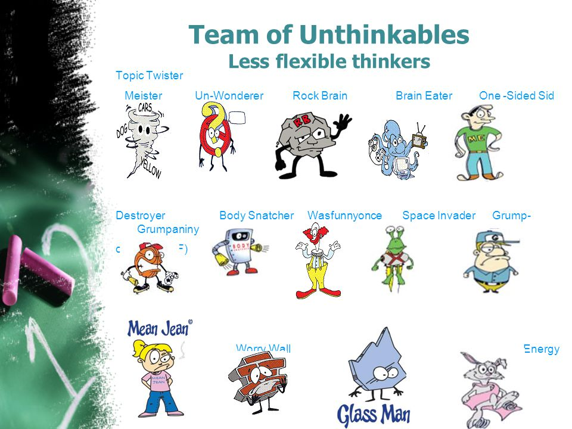
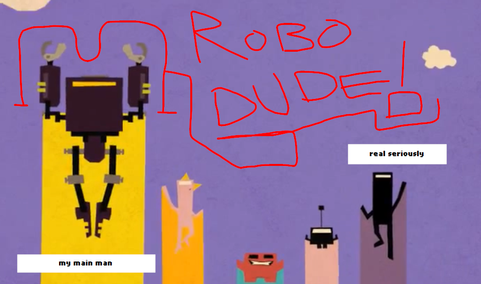

retweet to die instantly
part 1 (8/9/2019)
9:33 PM
The time was just exactly 9:33 PM when I typed that. Anyways, welcome back to my blog if anyone ever reads it! I've actually been mostly busy on the site last night by improving the projects page with some nice images of my own projects and the ones I work for. I also fixed up the header again by using HTML instead of pure Markdown to get it to look the way I want to. It's not the best on mobile, but I'm not even going to bother and try and get that working again.
That aside, it's time for that part of the blog where I tell you what I did today, maybe talk about a past time. Let's start off with what I did first. I slept all morning. Yeah, staying up until, like, 4 AM probably wasn't the best idea for myself. Thankfully, that's fine. I usually have the power to keep chugging along until I actually believe I have nothing else to do besides go and hit the hay. What would you think I'd do?
Earlier today, I re-found something old that I just so happened to have read at school before. However, this sort of thing isn't like a "neat old thing that's fun to look back onto". I actually hate it. Have you ever heard of a group of characters called the Unthinkables? I'll do my own best to explain. The Unthinkables are actually a group of characters made for a educational book series made for people with social disabilities, such as the fabled autism people still use a joke for some reason to this day.
Now, why have I heard of it before? Because I was told to read it. Let me try and explain. A few years ago, during a school day, one of the other faculty members invited me to their classroom, which is usually like once per week or so. I'm not sure if that only happens at my school, but it's always, like, two or so people including myself who would be invited to the classroom. No one else actually gets that sort of treatment. Just because of how odd it sounds once I actually think about it some more, I'd say that's just a thing that only happens at my school and no one elses.
Moving on, once I got to the classroom (which wasn't really a classroom but more of a small area with a SMART projector and a computer desk, including a table with chairs), the teacher happily passed a book over to me. What's the book? It's none other than Superflex. Superflex is supposed to be one of those parody superheroes not made to be entertaining or actually interesting at any point of their lifespan, but just to be some boring educational character that acts like someone that takes things way too long to even do the smallest of things, like even cleaning the dang floor.
10:09 PM
The collection of Superflex "comics" are to help with social thinking, which could be useful for people with social issues. Now do you see where I'm actually going with this? This believes me to think that due to my past actions or evaluated behaviors at the school I go to, the school faculty think there's something wrong with me socially. I don't like that. However, I don't actually remember which Unthinkable or specific Superflex comic it was, but I will say that the comic's style is literally garbage with sometimes literal clip art thrown into the mix with Comic Sans of all things added into the mix. Who in their right mind thought that this was totally fine? Well, the answer's subjective, but I'll leave that up to you.

Now, if I had to think of my favorite Unthinkable character based on their design, it'd had to be Glass Man, because that's the one that doesn't make me want to commit Cookieizi the most.
Moving on from that, what else did I actually do today? Well, this one's more on the complaining side, so I hope you can deal with that. Next on my list of things to talk about tonight is none other than the series BIT.TRIP runner, and then we'll move on to some stuff I went on about over on my Twitter. BIT.TRIP was a WiiWare original game series where you controlled the character Commander Video as he tries to fulfill his life and make it worthwhile by overcoming obstacles in his way, in the style of good ol' fashioned A R C A D E G A M E S !


BIT.TRIP's been kinda dead for a long while, but one company went and decided to kick the ol' horse by making the sequels to BIT.TRIP RUNNER with a 2nd and most recently, 3rd installment. I'd get that people would like that and all... but... the redesign they tried pulling off was probably one of the worst choices they could've made, and they went and did it. What sort of moron thought that THIS was totally acceptable?

11:32 PM
!!BREAKDOWN ALERT!! !!PREPARE FOR ENDLESS PONDERING!! !!BREAKDOWN ALERT!! !!PREPARE FOR ENDLESS PONDERING!!

!!BREAKDOWN ALERT!! !!PREPARE FOR ENDLESS PONDERING!! !!BREAKDOWN ALERT!! !!PREPARE FOR ENDLESS PONDERING!!
In BIT.TRIP's original titles (not depicted by the above image of the breakdown alert), you had this wonderful looking pixelated/3D wonderland of interesting areas with nice detail put into them. The pixelated look and overall style of those games are what gave BIT.TRIP it's signature look. If you take that away from it, the game's just a bland 3D project like something you'd see in Unity. Like, gosh, couldn't it KILL to even keep the game style consistent for the series? What was the fucking motive of this? THIS IS NOT BIT.TRIP.
COMMANDER VIDEO DABS IN THE THIRD ONE TOO WHAT THE LITERAL FUCK!!!!!!!!!!!!!!!!!!!!!
That aside, RUNNER 2/3's art style isn't the best thing in the world. I personally think it fails miserably in contrast to the original's neat and sleek art style. Another thing I wanted to mention now about RUNNER 2 was actually when they did get the time to include a DLC with characters from, you guessed it, OTHER INDIE GAMES. Now, there is one thing that keeps RUNNER 2 accurate to BIT.TRIP, that thing being that it sticks with the actual series plot (or what it was!).
Now, for people who probably don't know, it works as in RUNNER, Commander Video finds the allies of the female version of himself, Meat Boy (from Super Meat Boy (yes)), a robot, a tiny Commander Video with a square body instead of a rectangular one, and I think that's about it, However, the evildoer, Timbletot, sends Commander Video to some weird-ass realm with a weird-ass art style. That could be considered as an excuse for why the game's main art style makes no sense whatsoever. It reminds me of the Sonic movie designs some drunk designer made on a night out.
But wait, there's more! I actually like BIT.TRIP Runner's intro art style, as it more resembles the pixel art style in the design, but also tries to be different by making it a bit more cartoonish, but not too much. I'd say it was done by actually having the pixel designs, but by distorting the line work by just a bit, it looks more cardboard cutout-like, with the uneven lines.
Watch the intro video by clicking on the image, if you want

I'd say however that the design of the clouds especially in the beginning scene seem to puffy to fit with the rest, especially that big ol' robot. That guy is just rocking in the new design, honestly. I wanna do something like that. He'd even translate better to RUNNER 2/3 than the others would. Especially Meat Boy. It'd be hard to keep the ESRB rating the same when Meat Boy, a block of meat (or flesh for some people), is putting his own juice/blood everywhere he literally steps.
Another good thing about RUNNER 2's intro's art style is that they didn't give Commander Video fingers most of the time, but it's still implied he has fingers, but they're more fitting by not making it too different to the good ol' stick arms we all know and love. RUNNER 2/3's main style though just says "fuck it" and they give him fingers that's easily distinguishable. Literally 200% disgusting oh my god.
12:07 AM
Oh shit yeah I have to split the page. PART 2 TIME BOYS. See you next post.
part 2 (8/10/2019)
retweet to die instantly part 2: just bit.trip
10:43 PM
I feel that the amount of time it took me to even get to the next post may have to make me cut in a part 3, or reconsider how I actually organize my posts at this point. Anyways, hi. I'm rust_ again, and I got more words to say today. If I'm correct, I was talking about BIT.TRIP Runner's art style? Yeah, I was. Well, I actually don't have anything else to say about it besides the jump to 3D was like Sonic's first steps in the 3D world. (Note from a few minutes later: I had much more to say.) It never went well at all.

Now, when I mean the jump to 3D, I mean at the perspective of the characters themselves. I say this because the backgrounds of BIT.TRIP were always in a 3D environment, the game was always built with some sort of third dimension to it, with sometimes 2D being used in the bonus stages, except it was intentional as the levels were made to portray older games with a 16/8-bit style, much like the days of the SNES, NES, Genesis, and the freakin' NEO-GEO or whatever that forgotten one was supposed to be. I'm too busy listening to SILVER SURFER'S SOUNDTRACK AND/OR TIME TRAX FOR SEGA GENESIS, PEOPLE.

Commander Video was always a person running around in a 3D world as a 2D being. For some games, making the half-jump from 2D to 3D with still some 2D involved can require a good knowledge on both ends of the spectrum. I'd say it'd require just about as much effort to make a game entirely in 3D or 2D. Now, I did dabble into game design myself for 4 years on a kids programming language called Scratch, but that doesn't stop me from having the rights like anyone else to talk about something I never actually believe that I'll fully accomplish. Games like BIT.TRIP are one of the few examples (probably more than just "a few") that actually combine both 2D and 3D together to make something new, something that can be actually interesting to look at than "oh wow, another generic 2D indie game with pixel art or simplistic style/geometry" or "oh wow some basic 3d with a concept that hooks all the youtubers so the developer can push themselves to add more random and sometimes unneeded content". I'd hate to be somewhat disrespectful to indie developers trying to make it big, but it's sometimes not the best solution to take the cheap shot. Try and challenge yourself once a while. go and do something that you haven't done before. Hell, I've drawn objects and stickfigures for long enough that I'm only now starting to draw actual human characters. Believe that.
Back on topic of actually BIT.TRIP and not something about generalized game design for people trying to get into the game industry as a developer, I fear that the newest installments of Runner seem to abandon what makes BIT.TRIP the way it is. The surreal pixel style with 3D elements drew people into the game, and if you take that away, it's just another generic arcade game. That's what RUNNER 2/3 is, a generic arcade game. Hell, I'm gonna make the bet that they reference the name BIT.TRIP less in RUNNER 3 than RUNNER 2, and they both have the same style. I wouldn't be surprised if they just make RUNNER alone and just leave out BIT.TRIP altogether. This does remind me, though. Remember when I talked about that nice yellow robot and the square dude with the antenna. They're still in the new games! Just not as viewable as they used to be. Actually, I think that they were more present in RUNNER 2/3 than in BIT.TRIP Runner, as they were mostly just seen in the cutscenes.
11:03 PM
I'll be damned, should've wrote this sooner. Anyways, to sum it up, Runner 1 does what the other two doesn't do. It tries to be something that you don't normally see in games of it's time, or something in terms of gameplay. Runner 2 and Runner 3 is exactly what they are. Runner games. I'd play a mobile game and it'd be roughly the same thing. Hell, I think the UI sounds in Runner 3 are taken from Geometry Dash. I'll be honest, I ain't the best guy game-wise, nor am I the best writing-wise, art-wise, definitely coding-wise, social-wise maybe, but when I say that Runner 1 is better than Runner 2/3 graphically and even fundamentally, I at least know what I'm trying to prove, and I do my best to portray those expressions back in the style of text, with a little bit of markdown to hElP keep the message strong. BIT.TRIP deserves more than just being classified as another generic title, it was originally something much more interesting, something that I would sink my teeth into and realize that it's not something empty and full of sugar. I want something actually good with a lot of thought and effort put into it. Something that doesn't rely on release dates, margins, limitations, celebrities, or the sorts. I want something that breaks out of the water and shows it's true colors, the way the developer wants, in hopes of maybe, just one day, a group of people will understand.
That's the magic of development, and BIT.TRIP told us that straying from the norm can lead to a success that could drive someone to tears. Game development is beautiful and portrays even it's own story, in a way. You'll never know until you actually give it an attempt.
It's a BIT.TRIP, until it's over.